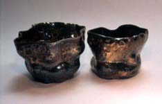
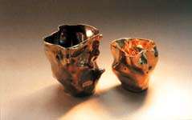
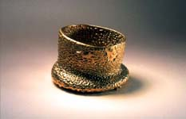

| Georgette
Ore introduce "Los objetos Picaros"
Esta página contiene images detalladas.
Este es el segundo capitulo en la serie de artículos de
Don Pilcher sobre algunos de los caracteres que lo han inspirado
y ayudado en la creación de su obra cerámica. El intercambio
es bienvenido.: Don Pilcher:
.
Georgette Ore y los objetos picaros- Capitulo
2
 La
pregunta permanece abierta. Alguna gente piensa que “los objetos
picaros”es el producto artístico de un profundo afecto.
Pero otros creen que la mejor palabra es infección. Entonces
hubo alguna incertidumbre cuando el staff se encontró para
planear nuestra primera exhibición. Presentes estuvieron:
Bucks hijo, el dueño; Mosley Bunkham el encargado del negocio;
Don Pilcher, el otro alfarero; Shakespeare, el perro del negocio;
y Uds. Claro. La
pregunta permanece abierta. Alguna gente piensa que “los objetos
picaros”es el producto artístico de un profundo afecto.
Pero otros creen que la mejor palabra es infección. Entonces
hubo alguna incertidumbre cuando el staff se encontró para
planear nuestra primera exhibición. Presentes estuvieron:
Bucks hijo, el dueño; Mosley Bunkham el encargado del negocio;
Don Pilcher, el otro alfarero; Shakespeare, el perro del negocio;
y Uds. Claro.
Nosotros discutimos nuestro proyecto por horas. Bucks quedo repitiendo
que importante este evento era. Pilcher hablo interminablemente
sobre todo el tema cerámico que el conoce…enfatizando
en lo interminable. El es un profesor retirado y con eso: piensa
y habla en 50 minutos de tiempo- cátedra. Cuando comienza
con ciertos temas, como caolín de floculado y engobes, su
discurso se apresura y su labio superior se rompe en transpiración.
Que peso!
Mosley no dice mucho porque es nuevo. Pero cuando se fastidia el
siempre se cubre con esto: “el sol no brilla en el mismo trasero
de perro todos los días”.Esto pasa por filosofía
de aquí. Sobre Shakespeare; aunque el tiene un gran receptivo
vocabulario, el no dice nada mas también…naturalmente.
Ello es demasiado irónico. Ellos deberían haberlo
nombrado Harpo. Yo odio la ironía.
En total 5, hombres, que hacen que yo sea la única mujer
por acá. Honestamente Dios, algunos días miro por
arriba desde el torno y todo lo que yo puedo ver son ladrillos y
penes. Este no es un ambiente fácil desde que nosotros vivimos
y trabajamos en este pequeño, oscuro espacio entre los oídos
de Pilcher. Que carga también.

Pilcher dice que nosotros podemos dejar afuera este show en 3 semanas.
El sugirió una arcilla, dos alfareros (el y yo) tres esmaltes
y cuatro formas: Vols., platos, jarras y vasos. Yuck! El también
noto que el horneado a leña esta de moda en estos momentos.
No estoy seguro que tomo el juego de palabras en serio. Triste.
Le dije que: “para el horneado a leña se necesita abundancia
de tiempo, pero no todo el jodido tiempo”. Ello tomo algo
en hacerse pero yo eventualmente vendí con: “para una
primera exhibición nosotros debemos hacer algo fuera de los
orígenes… como la historia del arca”. Entonces
hicimos todos los objetos en pares- dos de cada cosa. Incluimos:
terracota, bone china, porcelana, esmalte de plomo, esmalte a la
sal, sobre cubierta, bajo cubierta, lustres, oxidación, reducción,
monococción, multicocción, sobre coccion. No raku…
yo odio el raku. Bucks dijo que tornee 467 objetos en total. El
debe saber.
Lo
que me llevo al “torneado torneado” par. Bucks canturreaba
constantemente, usualmente en el viejo estándar de Gershwin,
hazlo devuelta. Es irónico porque el posee un claro caso
de desorden obsesivo compulsivo. Le compre un libro sobre DOC, el
cual el tendrá consigo par siempre pero probablemente nunca
lo lea. En la respuesta hacia su canturreo. Pensé: torneare
devuelta algunas piezas, primero en el torno…y luego sobre
la mesa. Desde que alquile en “los objetos picaros”
para proveer la chispa creativa, pensé que la idea tenia
algún merito. Y algo de divertido también. Bucks no
estuvo de acuerdo me dijo de frente que las piezas excedían
cualquier cosa de chispa creativa y que se encontraban en una zanja
de lodo donde únicamente podrían ser rescatadas por
el fantasma de Peter Voulkos.
Le dije que esos objetos estaban actualmente en honor a su agradable
manera y en la perfecta apropiación del lema de “los
objetos picaros”. “Nosotros haremos cualquier cosa”
Bucks afirmo. El se ve a si mismo como un intelectual y todo lo
que tienes que hacer es envolver tu argumento en un billete de seis
dólares por palabra. Es algo triste. Pero el paga en tiempo
y sus cheques son siempre buenos.
Al fin, lo que tenemos para Uds. Es una primera exhibición
para alfareros. Nuestro trabajo puede ser fácil de apreciar
cuando es iluminado por un comentario de Shoji Hamada que una vez
hizo cuando vio un grupo diverso de objetos,” si, ellos son
todos lo mismo…todo diferente” Nosotros encontramos
su conclusión insondable e improbable, pero sorprendentemente
potente.
Si Ud. quiere ver más de “los objetos picaros”
puede ir a la galería en: www.terraincognitostudios.com.
Si quiere contactarse con nosotros directamente, puede mandarnos
un e-mail a
.
Sobre Don Pilcher: artista alfarero y autor norteamenticano.
Gano su bachiller en bellas artes en el Instituto de Arte Chouinart,
Los Angeles en 1964, y el master en bellas artes en la Escuela de
Diseño de Rhode Island en 1966. El enseñó en
la Universidad de Illinois en la campaña ubarna desde 1966-99.
Donde es ahora profesor emerito. El produce cerámica torneada
y alterada funcional. Imágenes y texto copyright Don Pilcher.
Contactar:
.
Rascal Ware Chapter 1/Español
Rascal Ware Chapter 2/Español
Rascal Ware Chapter 3
Rascal Ware Chapter 4
Rascal Ware Chapter 5
Rascal Ware Chapter 6
Más artículos
|

{kind=link}
{kind=link}
{kind=link}